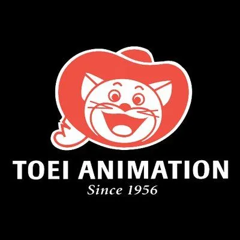
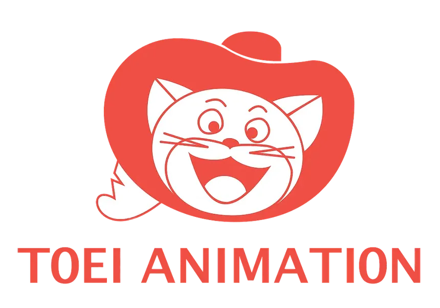
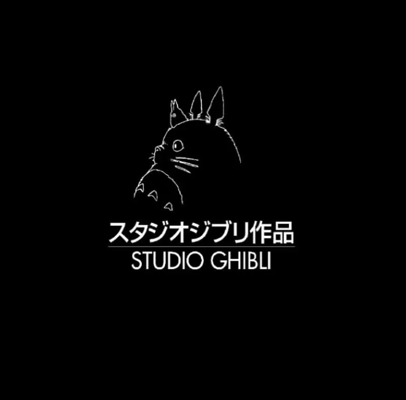
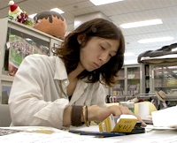
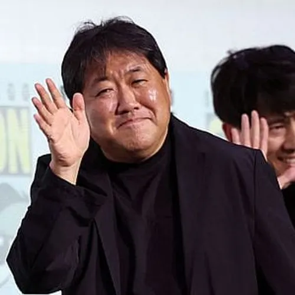

Studio Name: Wit Studio, Inc

Notable Works: Wit Studio is the Japanese animation studio responsible for producing the first three seasons of Attack on Titan, known for high-quality visuals and dynamic action sequences.
Filter Bar
Studio Name: Wit Studio, Inc
Notable Works: Wit Studio is the Japanese animation studio responsible for producing the first three seasons of Attack on Titan, known for high-quality visuals and dynamic action sequences.
Studio Name: MAPPA
Notable Works: MAPPA produced popular series including Jujutsu Kaisen, Kabaneri of the Iron Fortress, and continued Attack on Titan's final seasons with acclaimed animation quality.
Studio Name: Kyoto Animation
Notable Works: Known for The Melancholy of Haruhi Suzumiya, K-On!, and Silent Voice, Kyoto Animation is celebrated for exceptional art direction and character animation.
Studio Name: Toei Animation


Notable Works: Pioneering studio with Dragon Ball, Dragon Ball Z, One Piece, and Sailor Moon. One of the most prolific studios in anime history.
Studio Name: Studio Ghibli

Notable Works: Founded by Hayao Miyazaki and Isao Takahata, created masterpieces like Spirited Away, Howl's Moving Castle, and My Neighbor Totoro.
Studio Name: Bones
Notable Works: Created Fullmetal Alchemist, Soul Eater, My Hero Academia, and Carole & Tuesday. Known for vibrant art style and dynamic action.
Studio Name: ufotable
Notable Works: Produced the acclaimed Demon Slayer film and series with revolutionary animation techniques and stunning visual effects.
Creator Name: Eiichiro Oda

Studio Affiliations: Professional mangaka affiliated with Shueisha.
Notable Works: Created One Piece, which began serialization in 1997 and has become the best-selling manga series in history.
Creator Name: Hideaki Anno

Studio Affiliations: Founded Gainax, created Neon Genesis Evangelion.
Notable Works: Revolutionary director behind Neon Genesis Evangelion, known for psychological depth and experimental narrative techniques.
Creator Name: Yoshihiro Togashi
Studio Affiliations: Published through Shueisha's Weekly Shonen Jump.
Notable Works: Creator of YuYu Hakusho and Hunter x Hunter, two of the most influential manga series in anime history.
Creator Name: Hayao Miyazaki
Studio Affiliations: Co-founder of Studio Ghibli.
Notable Works: Master filmmaker behind Spirited Away, Howl's Moving Castle, and Princess Mononoke. Multiple Academy Award winner.
Creator Name: Kohei Horikoshi

Studio Affiliations: Published through Shueisha's Weekly Shonen Jump.
Notable Works: Creator of My Hero Academia, one of the most popular modern manga and anime series worldwide.
Creator Name: Kunihiko Ikuhara
Studio Affiliations: Directed for Toei Animation and independent projects.
Notable Works: Director of Sailor Moon and Utena, known for groundbreaking storytelling and visual symbolism.
Creator Name: Haruo Sotozaki

Studio Affiliations: Director at ufotable.
Notable Works: Director of the Demon Slayer film and series, known for revolutionary animation techniques and visual innovation.